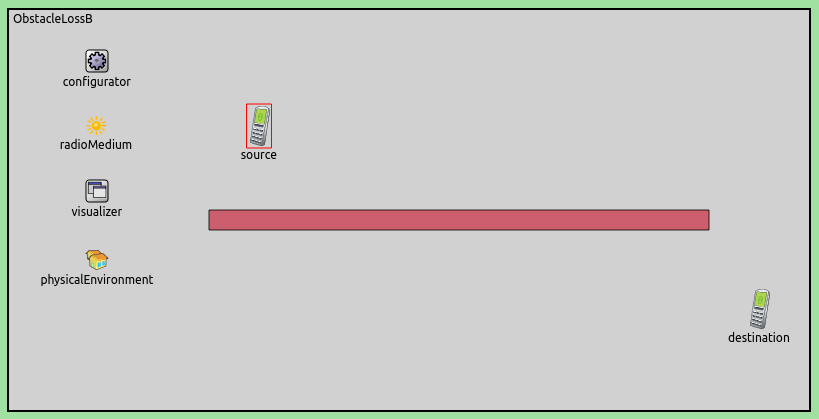
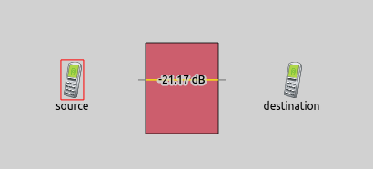

When radio signals go through objects in the physical environment, the objects might reflect and absorb the electromagnetic energy. The loss of energy often results in incorrectly received packets. This may alter the course of the simulation significantly. Seeing where the propagation path of radio signals and obstacles intersect gives some information about power loss, as it depends on the length of the intersection, and the material of the obstacle.
The ObstacleLossVisualizer module can display the intersection between physical objects and propagating radio signals. It can display the magnitude of power loss in dB. Additionally, the face normal vectors can be displayed at both ends of the intersection.
The configuration uses the following network:
It contains 2 AdhocHosts, and a wall between them. The hosts are stationary, and one of them is configured to ping the other. The wall obstructs the signals. The configuration also contains an IPv4NetworkConfigurator, an IntegratedVisualizer, an Ieee80211ScalarRadioMedium, and a PhysicalEnvironment module.
The visualization is enabled with the displayIntersections parameter. The displayFaceNormalVectors parameter enables the face normal vectors. The default color of the intersection lines is red, which is hardly visible against the brick wall. Thus the color is changed to yellow with the intersectionLineColor parameter:
When the simulation is run, and source starts pinging destination, the signals go through the wall:
The intersection of the wall and the transmission is indicated with a yellow line. The magnitude of power loss is indicated in decibels.
This configuration uses a more complex network:

It contains two AdhocHosts. In the middle of the playground, there is a rectangular brick structure, with a hollow interior. The hosts are configured to go around the structure on a rectangular path. They circle the wall in the clockwise direction. The destinationHost is configured to move with a higher speed than the sourceHost. The sourceHost is configured to ping destinationHost. The following animation illustrates what happens when the simulation is run:
The hosts send ping packets through the structure. The intersections are indicated in yellow. Even when the obstacles are not contiguous, the yellow lines are drawn whereever transmissions and the obstacles intersect. The face normal vectors are displayed at both ends of the intersections, their relative length indicate the length of the intersection. TODO: is the correct?
For more information, refer to the Ieee80211Visualizer NED documentation.